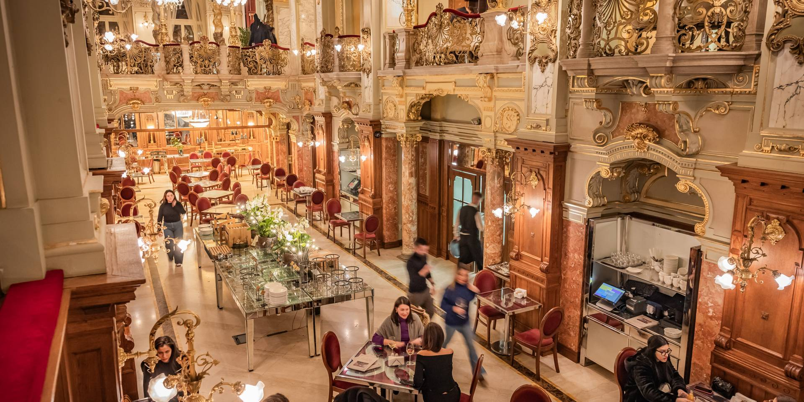
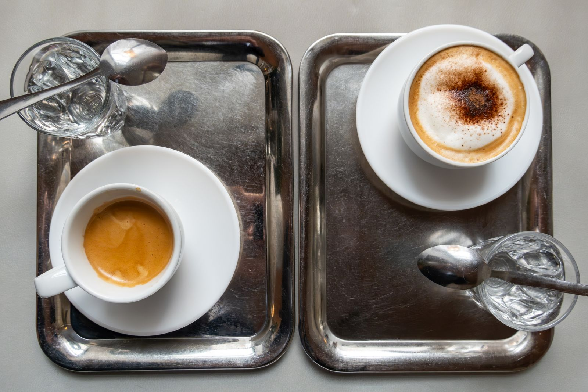
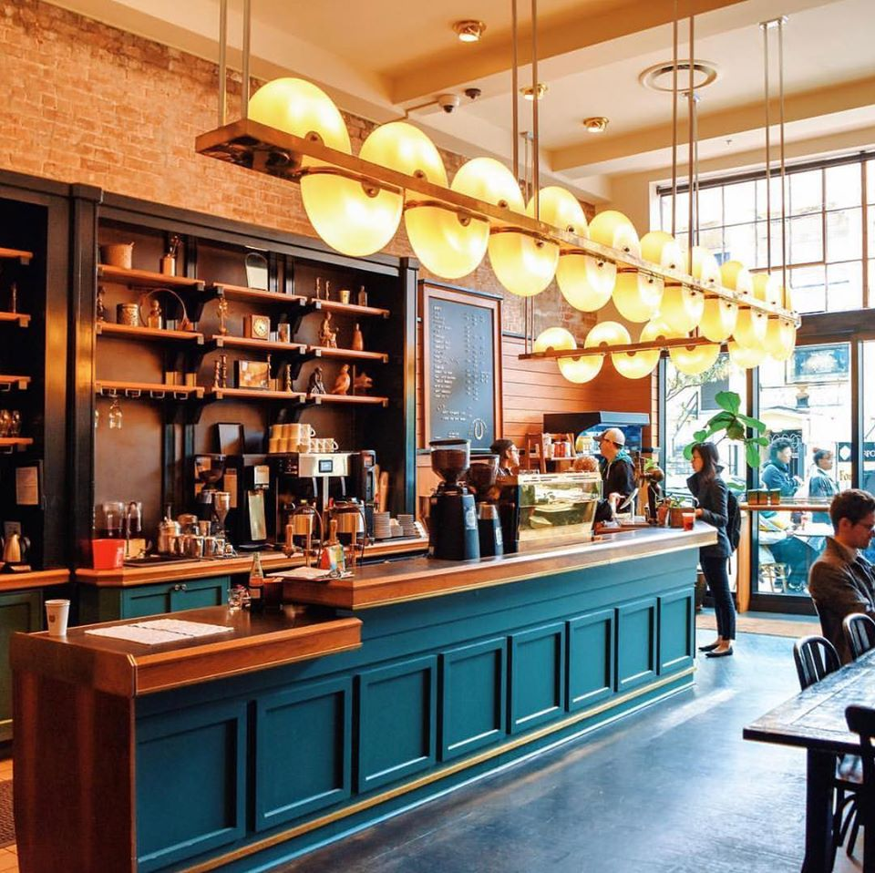
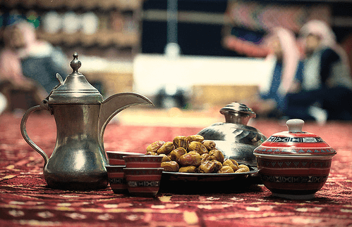
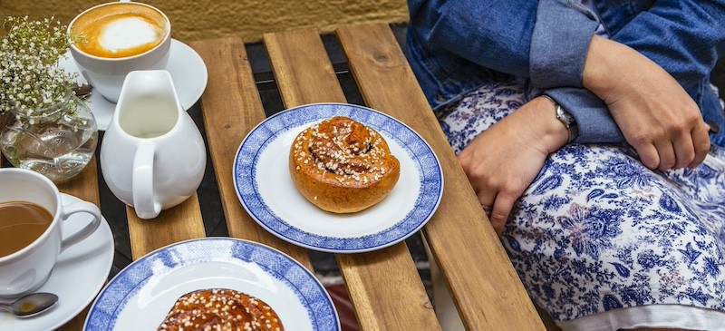
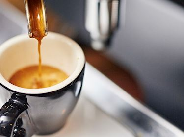
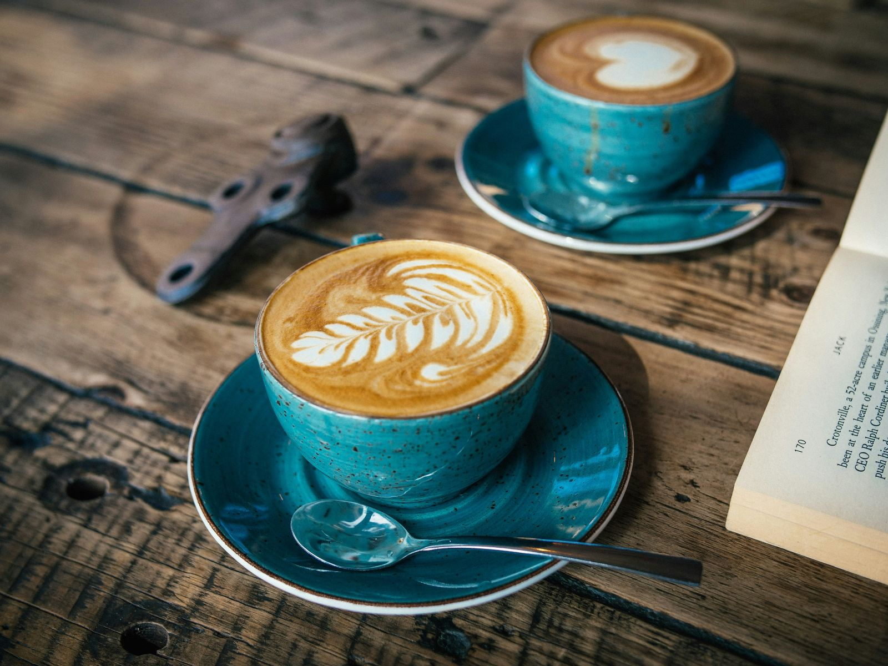
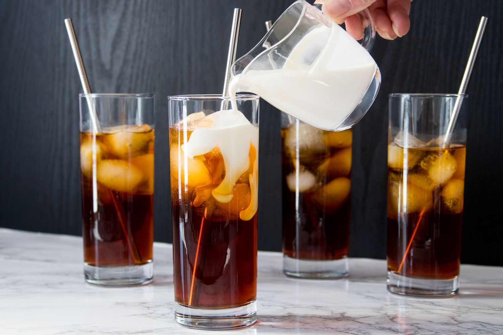
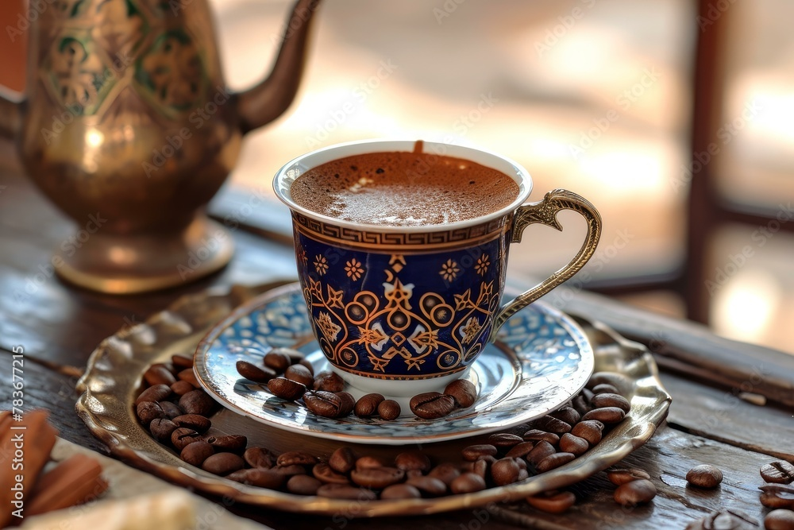

Rólunk
Szenvedéllyel készítjük a tökéletes csészényi kávét, amely minden érzékszervedet rabul ejti.

Szenvedéllyel készítjük a tökéletes csészényi kávét, amely minden érzékszervedet rabul ejti.

A magyar kávéházi kultúra a 19. század végén és a 20. század elején élte fénykorát, különösen Budapesten. A kávéházak nem csupán kávéfogyasztásra szolgáltak, hanem a művészek, írók és politikai gondolkodók találkozóhelyei is voltak. A leghíresebb budapesti kávéházak közé tartozik a New York Kávéház, a Centrál Kávéház és a Hadik Kávéház. Az írók és költők sokszor a kávéházakban írták műveiket, és a pincérek gyakran hitelre adták nekik a kávét és az ételt. A kávéházak berendezése elegáns volt: hatalmas csillárok, márványasztalok és díszes falak jellemezték ezeket a helyeket. A magyar kávéházakban gyakran tartottak felolvasásokat, politikai vitákat és sakkpartikat is. Az első magyar kávéházak a török hódoltság idején jelentek meg, de igazán a 19. század végén kezdtek el virágozni. A kommunizmus idején sok kávéházat bezártak vagy átalakítottak, mivel a hatalom nem nézte jó szemmel az értelmiségi találkozókat. Az utóbbi évtizedekben reneszánszát éli a magyar kávéházi kultúra, és egyre több régi, híres kávéház újranyit. A magyar kávéházak ma is őrzik hagyományaikat, és a helyiek, valamint a turisták számára is különleges élményt nyújtanak.


New York az egyik legélénkebb és legdinamikusabb kávékultúrával rendelkező város a világon. A klasszikus amerikai "diner" stílusú kávézók évtizedek óta népszerűek, ahol nagy bögrékben szolgálják fel a híres "bottomless coffee"-t (folyamatosan utántölthető kávé). Az 1990-es évektől kezdve egyre nagyobb teret hódítottak az olasz stílusú kávézók, ahol az eszpresszó és a cappuccino váltak népszerűvé. A harmadik hullámos kávékultúra térnyerésével New Yorkban olyan speciality kávézók nyíltak, mint a Blue Bottle, Stumptown és Devoción. A New York-i kávéházak híresek az egyedi dizájnjukról, a minőségi pörkölésről és az újító technikákról, például a nitro cold brew és az alternatív tejkínálat miatt. A város pezsgő élete miatt sok kávézó 24 órán át nyitva tart, hogy kiszolgálja a soha nem alvó város lakóit. New York híres "grab-and-go" kávékultúrájáról is, ahol az emberek gyorsan felkapnak egy papírpoharas kávét és munkába sietnek. A hipster kávékultúra is erős New Yorkban, különösen a Williamsburg és Brooklyn környéki kávézókban, ahol a kézműves kávékat és filteres technikákat részesítik előnyben. A város multikulturális jellege miatt rengeteg különleges kávétípust találhatunk, például japán matcha latte-t, vietnámi jegeskávét vagy mexikói café de olla-t. New York kávékultúrája ma már nemcsak a reggeli rohanásról szól, hanem a minőségi kávézás és az élményalapú kávéfogyasztás is egyre nagyobb szerepet kap.

Az arab kávékultúra az egyik legrégebbi a világon, gyökerei a 15. századi Jemenbe nyúlnak vissza. Az arab kávé (qahwa) enyhén fűszeres, gyakran kardamommal, sáfránnyal vagy rózsavízzel ízesítik. Az arab országokban a kávét hagyományosan egy hosszú nyakú rézedényben, a dallahban főzik. A kávét apró csészékben, cukor nélkül, gyakran datolyával vagy édességekkel kínálják. Az arab világban a kávé szerves része a vendéglátásnak és a társasági életnek, egy csésze kávé elfogadása a tisztelet jele. A beduin hagyományok szerint a vendéglátó addig tölti a csészéket, amíg a vendég meg nem rázza a csészéjét, jelezve, hogy elég volt. Az Egyesült Arab Emírségekben, Szaúd-Arábiában és Katarban az arab kávé szolgálata egyfajta rituálé, amely az UNESCO kulturális örökségének része. Az arab kávézókban (majlisokban) az emberek órákig beszélgetnek és társasági életet élnek, miközben kortyolgatják kávéjukat. Az arab kávékultúra az iszlám hagyományokkal is összefonódott, gyakran imák előtt és után fogyasztják. A modern kávézókban a hagyományos arab kávé mellett népszerűek a török és nyugati típusú kávék is, de az arab kávézás szertartása továbbra is fontos maradt.

Észak-Európában a világ egyik legmagasabb kávéfogyasztását figyelhetjük meg, különösen Finnországban, Norvégiában és Svédországban, ahol az emberek napi több csésze kávét isznak. A régióban az egyik legnépszerűbb kávéfajta a fekete, szűrt kávé, amelyet egyszerűen és nagy mennyiségben fogyasztanak. Finnországban létezik egy sajátos kávékészítési mód, a Kaffeost, amely során a kávét egy speciális, sós leipäjuusto sajtra öntik. A svédek híres "Fika" szokásuk szerint a kávézást társasági eseményként kezelik, és süteményekkel, például fahéjas csigával (kanelbulle) fogyasztják. Norvégiában a "kokekaffe" egy hagyományos főzési módszer, amely során a kávét egyszerűen forró vízben főzik meg, szűrés nélkül. Dániában a kávé a hygge életstílus szerves része, ami a meghittség és a kényelem megteremtését jelenti egy jó csésze kávé mellett. Izlandon a kávéházak nagyon népszerűek, és a helyi specialty kávépörkölők egyre nagyobb szerepet kapnak a minőségi kávéfogyasztásban. Az észtek, lettek és litvánok is sok kávét fogyasztanak, és a skandináv hatás mellett az erős eszpresszó-alapú italokat is kedvelik. Az észak-európai országokban egyre elterjedtebbek az újhullámos kávékultúrák, ahol a helyi pörkölők és a fenntartható kávéfogyasztás is előtérbe kerül. A hideg éghajlat miatt a kávé nemcsak élvezeti cikk, hanem egyfajta melegítő és közösségi ital, amely az embereket összehozza a sötét, hosszú téli hónapokban.

Tiszta, erős kávé, a tökéletes alap.

Krémes, habos csoda, amit imádni fogsz.

Frissítő, hidegen áztatott kávé.

A Maghreb kávé a Tunézia, Algéria, Marokkó, Líbia és Mauritánia alkotta észak-afrikai régió kávékultúráját foglalja magában. Bár a tea (különösen a mentatea) a térség fő itala, a kávéfogyasztásnak is van hagyománya, amely az arab, török és francia hatásokat ötvözi.
A Maghreb kávé hagyományosan erős, fűszeres és gyakran török kávé módjára készül cezvében. Az arab és török hatás érződik rajta. A gyarmati múlt miatt az eszpresszó és a café au lait is népszerű, különösen Algériában és Tunéziában. Ami igazából a Francia befolyásnak köszönhető.
A modern kávézókban egyre népszerűbbé válnak az olasz és amerikai stílusú kávék, de a tradicionális kávéfogyasztási szokások továbbra is élnek. A Maghreb kávékultúra tehát gazdag és változatos, ötvözi az arab hagyományokat, a francia eszpresszó-stílust és a helyi fűszeres ízvilágot.